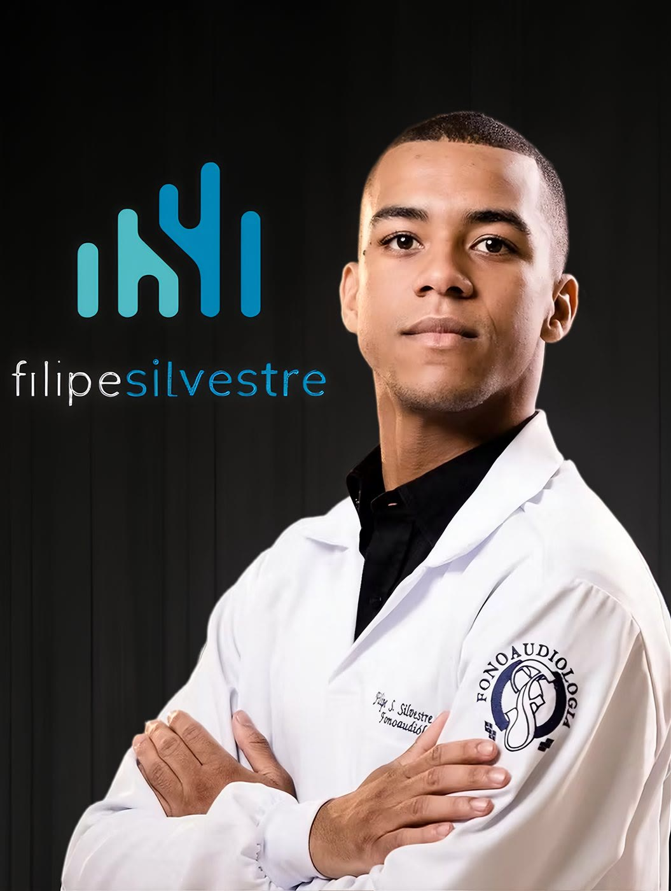
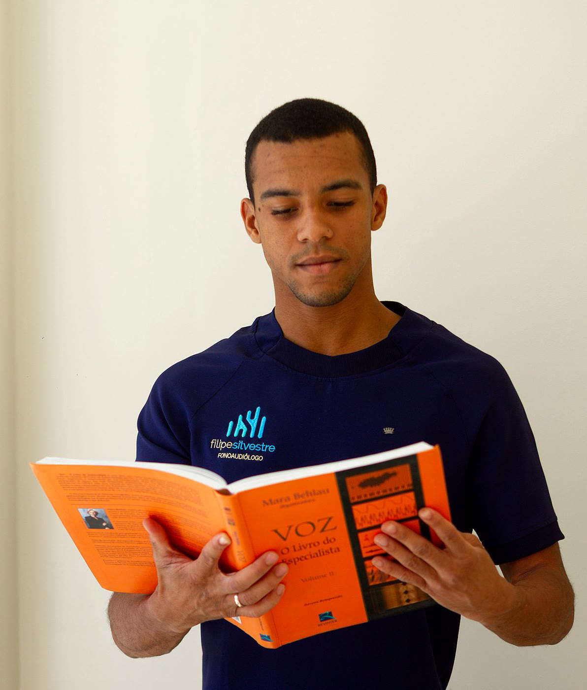
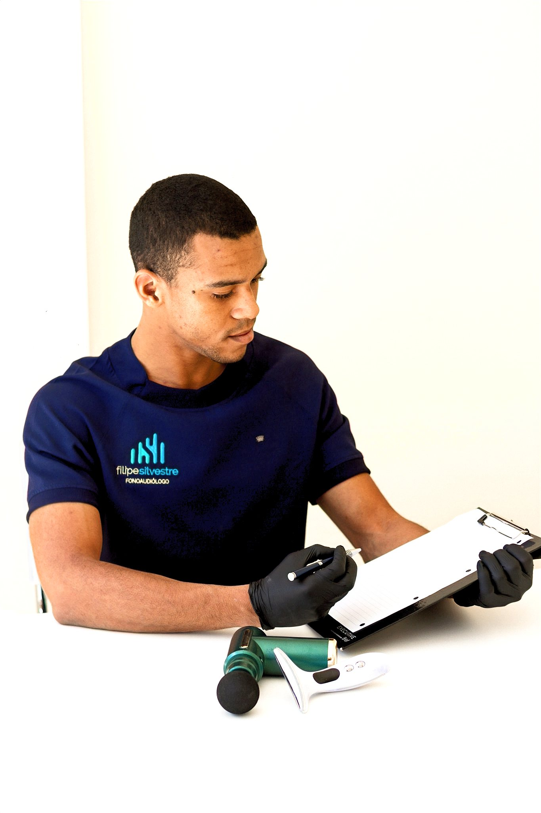

5,0 · 25 avaliações no GoogleAnápolis/GO · Atendimento domiciliar e online
Atendimento fonoaudiológico humanizado em Anápolis e online.
Voz, deglutição e comunicação.
Atendimento exclusivo, com hora marcada e agendamento antecipado.
Sua voz cansa rápido, fica rouca ou falha na hora mais importante? Quer aprimorar sua voz para palco, sala de aula ou liderança? Voz firme, saudável e com a projeção que sua profissão exige.
Dificuldade para engolir? Tosse durante as refeições? Medo de se engasgar? Reabilitação para idosos, pós-AVC e pacientes neurológicos. Comer com segurança, dignidade e autonomia.
Dificuldade em se fazer entender? Fala confusa após AVC ou lesão? Reabilitação da fala e linguagem para pacientes neurológicos. Reconectar-se com quem você ama.
Recuperar minha falaResponda 3 perguntas (leva ~30 segundos). O resultado aparece na hora e não substitui uma avaliação — só ajuda a entender se vale buscar atenção.
⚠️ Esta triagem é apenas educativa, não realiza diagnóstico e não substitui a avaliação de um profissional. Em caso de dúvida, procure um fonoaudiólogo.
Sou fonoaudiólogo com atendimento domiciliar e online em Anápolis/GO. Com zelo, originalidade e visão, ofereço um cuidado humanizado e baseado em evidências — no conforto da sua própria casa.
Vozes que ressoam. Esse é o meu propósito: despertar o potencial comunicativo de cada pessoa, com resultados reais e duradouros.

O que torna meu atendimento diferente
Anamnese clínica, avaliação perceptivo-auditiva atualizada e análise acústica complementar com Voxmetria. Tudo junto, num único atendimento.
Ao final da avaliação, você recebe feedback detalhado, orientações personalizadas e um exercício inicial pra começar já. Sai com clareza e ação.
Pós-graduação em Voz e Disfagia, Formação Integrada em Voz pelo CEV (Coach Vocal) e aprimoramento contínuo. Conhecimento técnico aplicado a cada paciente.
Você escolhe: no conforto da sua casa em Anápolis ou online de qualquer lugar. Mesma técnica, mesmo cuidado.

Esqueça deslocamentos e salas de espera. Levo o atendimento fonoaudiológico até você — com a mesma qualidade, tecnologia e cuidado de uma clínica especializada.
Agendar uma consultaAnálise vocal com software Voxmetria e microfone profissional. Você recebe um relatório completo da sua avaliação.
Veja transformações reais de pacientes que confiaram no meu trabalho
Relatos de pacientes — coletados no Google.
Entre em contato pelo canal que preferir. Respondo rapidinho.